Analizar / Generar
A esta opción se llega sobreponiendo el cursor sobre el módulo de OT donde se despliega un submenú de transacciones disponibles y luego se da clic en Analizar/Generar.
 Imagen 119. Órdenes - Analizar/Generar
Imagen 119. Órdenes - Analizar/Generar
Esta transacción abre una ventana que permite hacer el análisis a un conjunto de OT que debieran ser ejecutadas en un período seleccionado, para luego ser generadas como OT Programadas, como se visualiza en la siguiente imagen:
 Imagen 120. Órdenes - Ventana Detalle Analizar/Generar
Imagen 120. Órdenes - Ventana Detalle Analizar/Generar
El Procedimiento para efectuar un Análisis y posterior Generación de OTs es el siguiente:
Digitar la fecha en el campo Desde, que corresponde al inicio del período a programar. AM sugiere la fecha del sistema en un rango de 7 dias. Luego, digitar la fecha en el campo “Hasta”, que corresponde al final del período a programar. AM sugiere la fecha de una semana después, pero es una fecha modificable a gusto. Normalmente el período a Analizar en este proceso, se trata de un período de corto plazo: tres días, una semana, una quincena o un mes. En la parte inferior, se encuentran los “Datos de la última generación” que indican la información del rango de fechas para el que se realizó un proceso de Generación de OT la última vez y el usuario que ejecutó el proceso. Una vez digitado el rango de fechas, dar clic en el botón ANALIZAR, seguidamente, aparece un mensaje de alerta y dar clic en ACEPTAR.
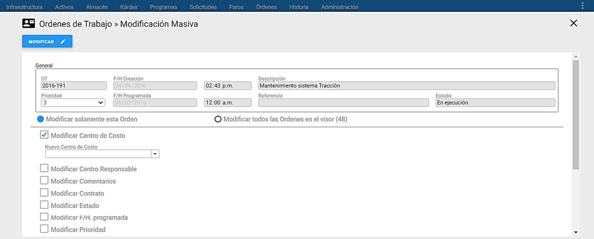 Imagen 121. Órdenes - Comenzar Analizar/Generar
AM recorre todos los programas de mantenimiento y establece cuáles deben generar OTs en el rango de fechas ya estipulado. Durante este proceso, puede visualizarse el estado de avance del análisis en la parte inferior izquierda. El sistema muestra un mensaje de las OTs analizadas del total de PM registrados en la base de datos. El proceso también se puede cancelar haciendo clic en el botón CANCELAR. Entonces el sistema detiene el proceso sin ningún tipo de perjuicio, es decir, los datos no son afectados en absoluto.
 Imagen 122. Órdenes - Comenzar Analizar/Generar
Imagen 122. Órdenes - Comenzar Analizar/Generar
Una vez finalizado el proceso, se muestra el detalle del análisis y se muestra cuántas OT se detectaron y la opción de tres botones: Ver Diagramas, Ver Reportes y Generar. Los primeros dos botones son de gran utilidad para estudiar el período analizado antes de generar OT, como se muestra en la siguiente imagen:
 Imagen 123. Órdenes - Finalización Proceso Analizar
Imagen 123. Órdenes - Finalización Proceso Analizar
Ver Diagrama
Para visualizar el diagrama de las OTs para ese periodo analizado, se da clic en el botón Ver Diagrama. A continuación, se abre una nueva ventana donde se visualiza a través de un Diagrama de Gantt, la información del Activo con su respectiva Tarea-Descripción y Criterio; a la derecha se muestra por colores (ver significado en el ícono parte superior derecha) el cronograma con las fechas proyectadas de las actividades, como se muestra en la siguiente imagen:
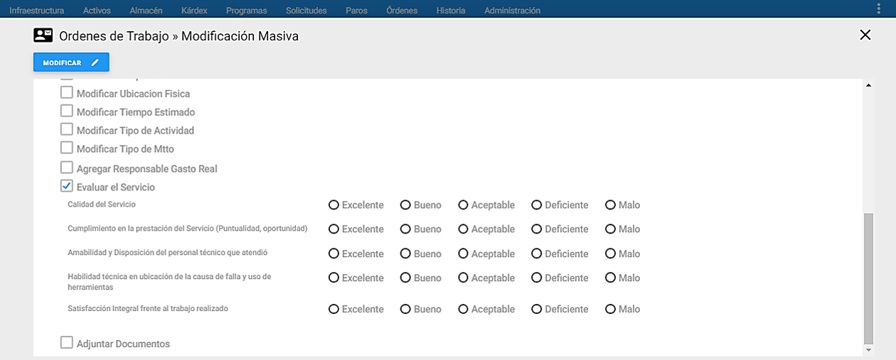 Imagen 124. Órdenes - Giagrama de Gantt
Es importante aclarar, que hasta este punto, no ha sido generada ninguna OT. Solamente se ha detectado un grupo potencial de ellas que deberían ser ejecutadas de acuerdo, a los criterios de programación, si el análisis del planeador de mantenimiento lo decide.
Ver Reportes
A continuación, se procede a verificar si para las OT detectadas en el proceso de análisis, existen todas las garantías de ejecución, en el rango de fechas programado. Para esto, se procede a imprimir varios reportes que para el caso se presentan, tal y como se visualiza en la siguiente gráfica:
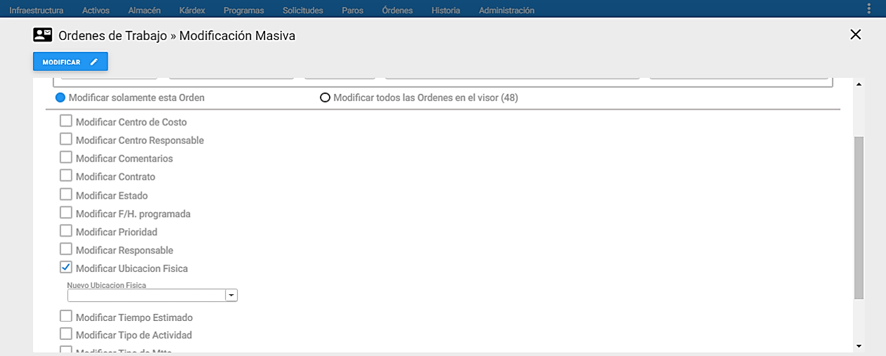 Imagen 125. Órdenes - Reportes
Los reportes disponibles en el análisis para efectuar esta revisión, son:
- Listado de Equipos por Generar Órdenes
- Cronograma de Mantenimiento Programado con TM (Ubicación Física y Centro De Costo)
- Cronograma de Mantenimiento Programado Con TM
- Actividades por Mes y Día
- Listado de Repuestos
- Actividades por Mes y Día con Presupuesto Discriminado
- Listado de Equipos por Generar Órdenes
- Programación de Actividades por Activo con Centro Responsable, Ubicación Física
- Cronograma de Mantenimiento
- Actividades por Mes y Día con Serie, Marca, Modelo.
Después de seleccionar el reporte, pulse el botón IMPRIMIR y el sistema abrirá una nueva ventana.
Si al imprimir alguno de estos reportes, el usuario advierte que una o varias de estas OT no deben ser Generadas, éste es el momento para que cancele todo el proceso, vaya a los PM respectivos, revise y modifique sus criterios, y vuelva a realizar un nuevo el proceso de Análisis. Si por el contrario después de efectuar la revisión, el usuario está seguro de que ésas son las OT a generar, se hace clic en el botón Generar. Este proceso crea tantas OT como hayan sido detectadas por el proceso de Análisis.
Una vez se generan las OT, los PM que las generaron, se actualizan automáticamente, ajustando sus criterios y fechas, preparando la consistencia de las generaciones futuras.
Modificar Masivamente
A esta opción se llega sobreponiendo el cursor sobre el módulo de OT donde se despliega un submenú de transacciones disponibles y luego se da clic en “Modificar Masivamente”.
 Imagen 126. Órdenes - ir a Modificación Masiva
Imagen 126. Órdenes - ir a Modificación Masiva
Esta transacción permite cambiar masivamente el Centro de Costos, Ubicación Física, Responsable, Centro Responsable, Causa de Falla, entre otras, de las OT previamente seleccionadas o de las que se encuentran en el Visor. Para ello se debe dar clic al link en azul Modificar Masivamente ubicado al lado superior izquierdo de la ventana.
 Imagen 127. Órdenes - Visor Modificación Masiva
Imagen 127. Órdenes - Visor Modificación Masiva
Seguidamente se muestran las opciones de modificación masiva disponibles.
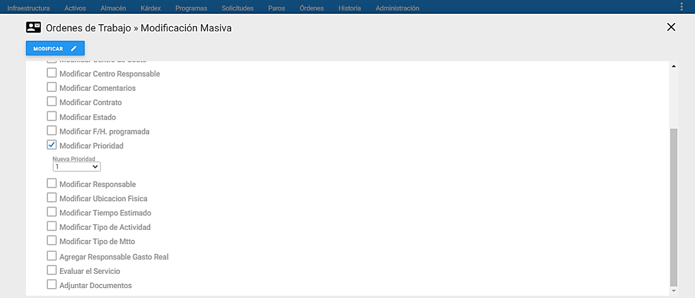 Imagen 128. Órdenes - Visor Modificación Masiva
Antes de efectuar cualquier modificación, en la parte inferior del recuadro general se muestran las siguientes dos opciones a tener en cuenta:
Modificar Solamente esta Orden: El cambio se aplica solamente a la OT que se encuentre seleccionada en el visor.
Modificar todas las Órdenes en el visor: El cambio se refleja en todas las OT que se encuentren seleccionadas en el visor.
Las opciones de Modificación Masiva son las siguientes:
Modificar Centro de Costo: Se modifica masivamente el Centro de Costo a las OT previamente seleccionadas.
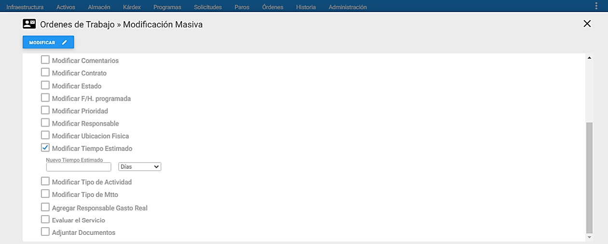 Imagen 129. Órdenes - MM Centro de Costo
Modificar Centro Responsable: Se modifica masivamente el Centro Responsable a las OT previamente seleccionadas.
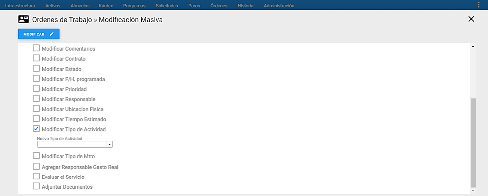 Imagen 130. Órdenes - MM Centro Responsable
Modificar Comentarios: Se modifican masivamente los Comentarios, de las OT que están previamente seleccionadas en el visor.
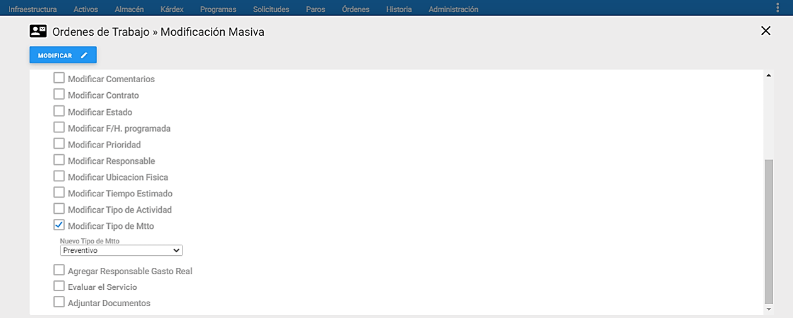 Imagen 131. Órdenes - MM Comentarios
Modificar Contrato: Se modifica masivamente el Contrato previamente definido a las OT que están previamente seleccionados en el visor.
 Imagen 132. Órdenes - MM Contrato
Imagen 132. Órdenes - MM Contrato
Modificar Estado: Se modifica masivamente el Estado de la OT que están previamente seleccionadas en el visor.
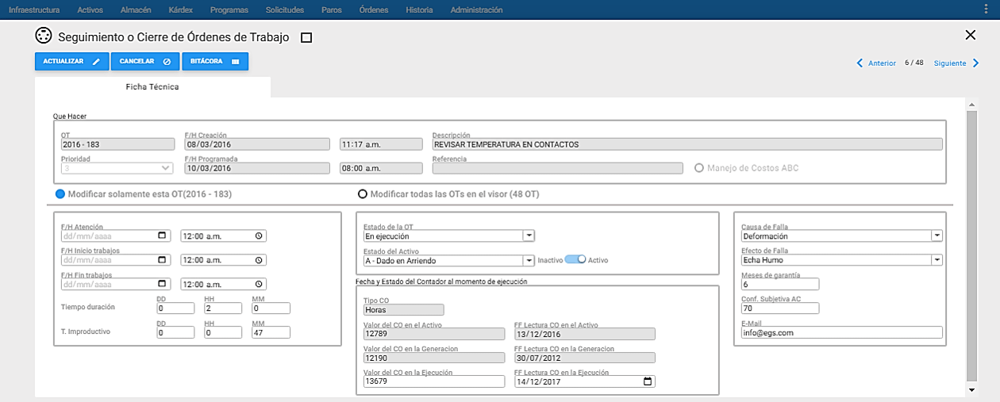 Imagen 133. Órdenes - MM Estado
Modificar F/H Programada: Se modifica Masivamente la Fecha y Hora Programada a las OT previamente seleccionadas en el visor.
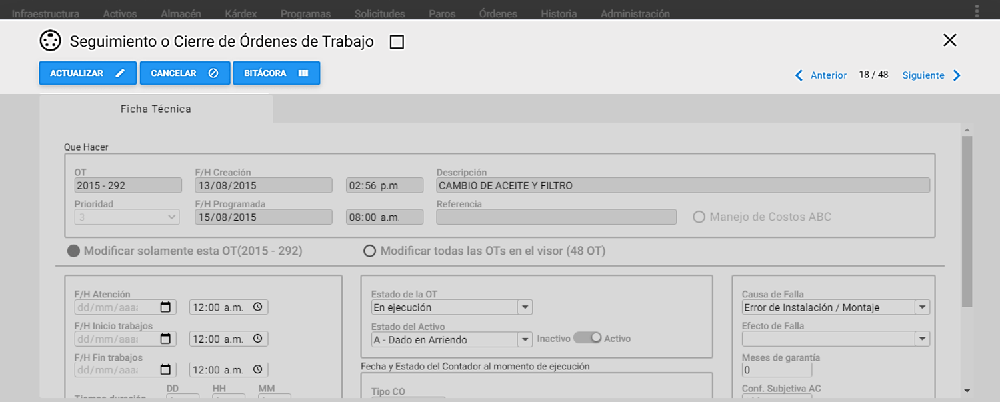 Imagen 134. Órdenes - MM F/H Programada
Modificar Prioridad: Se modifica Masivamente la Prioridad a las OT previamente seleccionadas en el visor.
 Imagen 135. Órdenes - MM Prioridad
Imagen 135. Órdenes - MM Prioridad
Modificar Responsable: Se modifica masivamente el Responsable, de las OT que están previamente seleccionadas en el visor.
 Imagen 136. Órdenes - MM Prioridad
Imagen 136. Órdenes - MM Prioridad
Modificar Ubicación Física: Se modifica masivamente la Ubicación Física a las OT previamente seleccionadas en el visor.
 Imagen 137. Órdenes - MM Prioridad
Imagen 137. Órdenes - MM Prioridad
Modificar Tiempo Estimado: Se modifica masivamente el tiempo estimado a las OT previamente seleccionadas en el visor. El tiempo puede ser en Días, Horas o Minutos.
 Imagen 138. Órdenes - MM Tiempo Estimado
Imagen 138. Órdenes - MM Tiempo Estimado
Modificar TA: Se modifica masivamente el TA a las OT previamente seleccionadas. Para que se habilite este campo, se debe elegir primero el TM.
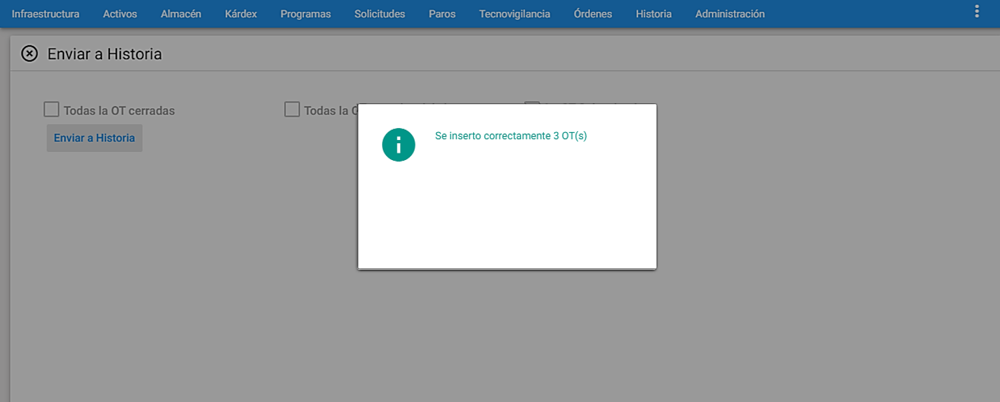 Imagen 139. Órdenes - MM TA
Modificar Tipo de Mtto: Se modifica masivamente el TM a las OT previamente seleccionadas en el visor, al seleccionar esta opción también se debe elegir el TA.
 Imagen 140. Órdenes - MM TM
Imagen 140. Órdenes - MM TM
Evaluar el Servicio: Se modifica masivamente la Evaluación de Servicio a las Órdenes de Trabajo previamente seleccionadas en el visor.
 Imagen 141. Órdenes - MM TM
Imagen 141. Órdenes - MM TM
Adjuntar Documentos: Se adjuntan masivamente documentos a las OT previamente seleccionadas en el visor.
 Imagen 142. Órdenes - MM TM
Imagen 142. Órdenes - MM TM
Nota: Es de gran utilidad efectuar Modificaciones Masivas para subgrupos de OT para mejorar el rendimiento del sistema. Para continuar con la Modificación Masiva, se debe confirmar al sistema dando un clic en el botón superior MODIFICAR y se debe dar en el botón ACEPTAR dos veces.
Seguimiento o Cierre Masivo
Para acceder a esta transacción se requiere tener el permiso de Cierre especial de Órdenes, sólo a través de este permiso es posible modificar una OT activa en estado Cerrada Ejecutada o Cancelada, como también, cerrar un conjunto de Órdenes preseleccionadas a través de un Subgrupo.
A esta opción se llega sobreponiendo el cursor sobre el módulo de OT donde se despliega un submenú de transacciones disponibles y luego se da clic en “Seguimiento o Cierre Masivo”.
 Imagen 143. Órdenes - Ir a Seguimiento y Cierre Masivo
Imagen 143. Órdenes - Ir a Seguimiento y Cierre Masivo
Para ingresar al Detalle del Seguimiento y Cierre de un registro, se debe dar clic en la OT del Visor de Seguimiento y Cierre Masivo:
 Imagen 144. Órdenes - Visor Seguimiento y Cierre Masivo
Imagen 144. Órdenes - Visor Seguimiento y Cierre Masivo
En el Seguimiento o Cierre de Órdenes se mantiene al día la información vital de ejecución de la OT, desde el momento en que se crea, hasta el momento en que se cierra para proceder a enviarla a Historia. Es aquí donde se registran las fechas, tiempos y demás básicos concernientes a la ejecución de la labor.
 Imagen 145. Órdenes - Detalle Seguimiento y Cierre Masivo
Imagen 145. Órdenes - Detalle Seguimiento y Cierre Masivo
En la gráfica anterior, Ventana de Seguimiento o Cierre de Órdenes de Traabjo, se aprecian sus componentes y sus respectivos contenidos.
Nota: Para efectuar el cierre a un grupo de OT se deberá hacer uso de los subgrupos antes de ingresar a esta transacción.
Al elegir cualquiera de las OT del visor se podrá escoger una de las siguientes opciones en la ventana detalle:
Modificar Solamente esta Orden: El cambio se aplica solamente a la OT que se encuentre seleccionada en el visor y al lado, entre paréntesis aparece su consecutivo.
Modificar todas las Órdenes en el visor: El cambio se refleja en todas las OT que se encuentren en el visor y a lado, entre paréntesis aparece la cantidad de OT existentes en él.
Para actualizar o hacer seguimiento de una OT, se deberán diligenciar los siguientes campos:
Que Hacer: Este recuadro aparece con los campos bloqueados para que el usuario visualice la información básica de la OT.
F/H de Paro: Este campo aparece adicional y es obligatorio sólo para las OT de tipo de mantenimiento Correctivo, y se registra la Fecha y hora del daño ocurrido. La fecha se maneja en formato DD/MM/AAAA (Día, Mes, Año); la hora se maneja en formato de 12h. Cabe anotar, que la fecha y hora consignadas corresponden al momento en que se informó del daño o falla a Mantenimiento, así que es posible que el daño haya ocurrido en una fecha/hora anterior. Sin embargo se debe procurar, administrativamente, que Mantenimiento se entere lo más pronto posible de la Fecha y Hora reales del Daño.
F/H Atención: Es la fecha y hora en la que el Personal de Mantenimiento llega a atender el fallo reportado, o sea, cuando se hace presente en la Ubicación Física del equipo, para realizar una inspección previa sobre el Equipo Reportado. La fecha se maneja en formato DD/MM/AAAA (Día, Mes, Año) y la hora se maneja en formato de 12h. Normalmente se utiliza en OTs creadas manualmente. Una vez se digita la Fecha y Hora de Atención, éstas se sugieren para la fecha/hora de Inicio de Trabajos y Fin de Trabajos de la OT, claro está, si tales fechas y horas no han sido digitadas aún.
F/H Inicio Trabajos: Es la Fecha y Hora que indica el momento de inicio de labores una vez que todas las condiciones están dadas: se han superado los tiempos de inspección y administrativos; la máquina está lista y en condiciones de ser mantenida, ya fue entregada al Depto. de Mantenimiento y éste a su vez, cuenta con todos los recursos necesarios para la ejecución: herramientas, instrumentos, materiales, repuestos y responsable. La fecha se maneja en formato DD/MM/AAAA (Día, Mes, Año) y la hora se maneja en formato de 12h.
F/H Fin Trabajos: Es la Fecha y Hora que indica el momento en que finalizan las labores de mantenimiento, incluyendo las pruebas o ensayos que determinaron el buen funcionamiento del equipo. La fecha se maneja en formato DD/MM/AAAA (Día, Mes, Año) y la hora se maneja en formato de 12h.
Tiempo Duración (ttr): AM sugiere como Tiempo de Duración, (o time to repair), la diferencia entre la Fecha/Hora de Fin de Trabajos y la Fecha/Hora de Inicio de Trabajos. Cabe anotar, que no siempre el Tiempo de Duración es la diferencia entre estas fechas/horas, porque pueden existir eventos que dejan temporalmente a la OT en Estado de “Pendiente”. AM permite corregir el tiempo de Duración en una OT, después de que fue calculado por el sistema, para que refleje el tiempo real de la ejecución. Por ejemplo, si una OT tiene como Fecha de Inicio de Trabajos XXXX/12/01 08:30 a.m., y como Fecha de Fin de Trabajos XXXX/12/01 04:00 p.m., AM sugiere como Tiempo de Duración 7 horas y 30 minutos. Sin embargo, si durante ese lapso se tuvo que detener la ejecución por 2 horas, debido a que faltaba un Repuesto o a que el técnico encargado se ausentó a realizar otra labor, se debe corregir la duración en 5 horas y 30 minutos.
T. Improductivo: AM sugiere como Tiempo Improductivo la diferencia entre la Fecha/Hora de Fin de Trabajos y la Fecha/ Hora de Paro (Para OT Correctivas), o como la diferencia entre la Fecha/Hora de Fin de Trabajos y la Fecha/Hora de Inicio de Trabajos (Para OT no Correctivas). Sin embargo, este valor puede corregirse, después de que fue calculado por el sistema, para reflejar la cantidad Real de Tiempo Improductivo que tuvo el Equipo en la OT actual.
Por ejemplo, si una OT correctiva tiene como fecha de Información de Paro XXXX/12/01 08:00 a.m., y como fecha de Fin de Trabajos XXXX/12/02 12:30 pm, AM sugiere como Tiempo Improductivo, 1 día, 4 horas y 30 minutos. Sin embargo, si en ese lapso, el Equipo no trabaja de 10 PM a 6 AM, pues la empresa no labora este turno de producción, se debe definir el tiempo improductivo como solamente de 20 horas y 30 minutos.
Tiempo Total de Solución: Este campo es calculado por el sistema y no permite corrección manual, equivale a la diferencia entre la Fecha de Paro y la fecha de Fin de Trabajos para las Órdenes Correctivas y para las OT preventivas o con otro tipo de mantenimiento es la diferencia entre la Fecha De Atención y la Fecha Fin de Trabajos.
Estado de la OT: Una OT puede tener uno de los siguientes Estados:
- E: En Ejecución
- K: Cancelada o No ejecutada
- C: Cerrada Ejecutada
- P: Pendiente de Ejecución
- PR: Programada
- PL: Planeada
Estos son los Estados predeterminados por el Sistema AM para las OT, pero el usuario puede personalizar otros Estados en la Tabla de “Estados” de Infraestructura.
Causa pendiente: Este campo se agregará en el caso de que a la OT se le ha ya definido el Estado “P: Pendiente”, luego se descuelgan las causas relacionadas a dicho Estado. En caso de requerir registrar una causa distinta, que no exista en la lista, se puede crear en la tabla respectiva de Infraestructura.
Causa de Cierre: Por defecto, cuando el Estado de la OT es cerrada y ejecutada, el sistema ubica en este campo la causa “OT Ejecutada”. Las opciones que se descuelgan en este campo varían según el Estado anteriormente definido. Por ejemplo, Si la OT se ha cerrado con un Estado de “K: Cancelada”, aparecen las distintas causas por las cuales se puede cancelar una OT. En caso de requerir registrar una causa distinta, que no exista en la lista, se puede crear en la tabla respectiva de Infraestructura.
Estado del Activo: Permite actualizar el estado del Activo desde esta opción. La funcionalidad de poder definir que el usuario logueado pueda modificar el estado del Activo, se parametriza en Administración, se sobrepone el mouse en una compañía de la lista que se muestra y se da clic en Valores por Defecto, la etiqueta OT, la opción “Modificar Estado del Equipo en Seguimiento y Cierre de la OT”.
Dejar el GR en Cero (0): Esta opción se habilita cuando el Estado de la OT es Cerrada Ejecutada o Cancelada o No Ejecutada. Si se habilita el check dando clic, al finalizar el cierre de la OT, el Gasto Real registrado en la OT se elimina, dejando los costos totales del Gasto Real en cero (0).
Causa de Falla: Para OT correctivas, este campo es obligatorio, se registra la Causa de la Falla que dio origen a la labor actual. Estas opciones que se despliegan, corresponden a las definidas en su tabla en la Infraestructura.
Efecto de Falla: Para OT correctivas, en este campo se registra el Efecto m as significativo de la falla que se presentó y fue reportado por producción.
Meses de Garantía: Indica cuántos meses de garantía se ofrecen por la labor realizada. El número de meses establecido empieza a regir a partir de la Fecha de Fin de Trabajos de la OT.
Conf. Subjetiva AC.: Este campo le permite establecer al técnico de mantenimiento encargado de la labor, un concepto subjetivo sobre la Confiabilidad del Equipo una vez finalizados los trabajos. Es un concepto que no se fundamenta en criterios o metodologías técnicas, pero que sí indica una apreciación de quien revisó y mantuvo el equipo objeto de la OT.
Email: En este campo el sistema asigna automáticamente el correo electrónico del Solicitante definido en la ficha técnica de la OT de la ventana detalle en el campo de Correo Electrónico. Sin embargo, este campo es modificable por el usuario y puede asignar el email de la persona que recibirá el trabajo de mantenimiento.
Fecha y estado del contador al momento de ejecución: En este recuadro se ingresa toda la información relacionada con el contador del equipo y su fecha de lectura al momento de cerrar la OT. Al actualizar esta información el sistema genera un mensaje para modificar la fecha de inicio de periodo en el módulo de programas; el usuario decide si se desea modificar este tipo de información o no. Se deben llenar los siguientes campos para proceder a actualizar la información:
Tipo CO: Este campo permanece bloqueado y muestra el nombre del Contador del Activo que fue asignado en el PM por Contador. Valor del CO en el Activo: Este campo permanece bloqueado y muestra el valor del Contador del Activo que se tenga definido en el módulo de Activos en la pestaña Ficha Técnica.
FF Lectura CO en el Activo: Este campo permanece bloqueado y muestra la fecha de lectura del Contador del Activo que se tenga definido en el módulo de Activos en la pestaña Ficha Técnica. Valor del CO en la Generación: Este campo permanece bloqueado y muestra el valor del Contador del Activo proyectado por el PM al momento de generarse.
FF Lectura CO en la Generación: Este campo permanece bloqueado y muestra la fecha de lectura del Contador del Activo proyectado por el PM al momento de generarse.
Valor del CO en la Ejecución: En este campo se define el valor del Contador del Activo al momento de ejecutarse la labor o al momento del cierre de la OT.
FF Lectura CO en la Ejecución: En este campo se define la fecha de lectura del Contador del Activo al momento de ejecutarse o al momento del cierre de la OT.
En el Seguimiento o Cierre, además de los botones ACTUALIZAR y CANCELAR , se visualiza el botón BITÁCORA , éste muestra en nueva ventana el historial de cambios de la OT en: Estado, Prioridad y Responsable. Se muestra esta información solo si se han presentado modificaciones, de lo contrario los campos permanecen en blanco.
 Imagen 146. Órdenes - Detalle Bitácora Seguimiento y Cierre Masivo_
Imagen 146. Órdenes - Detalle Bitácora Seguimiento y Cierre Masivo_
Para continuar con la actualización de una OT o un subgrupo de OT se debe dar clic en el botón de la parte superior Actualizar . El sistema muestra un mensaje alerta, para continuar dar clic en ACEPTAR.
 Imagen 147. Órdenes - Mensaje Alerta Seguimiento y Cierre Masivo
Imagen 147. Órdenes - Mensaje Alerta Seguimiento y Cierre Masivo
Una vez se complete el cierre masivo, el sistema muestra la Ventana Visor con los respectivos cambios:
 Imagen 148. Órdenes - Actualización Seguimiento y Cierre Masivo
Imagen 148. Órdenes - Actualización Seguimiento y Cierre Masivo
Enviar a Historia
A esta opción se llega sobreponiendo el cursor sobre el módulo de OT donde se despliega un submenú de transacciones disponibles y luego se da clic en “Enviar a Historia”.
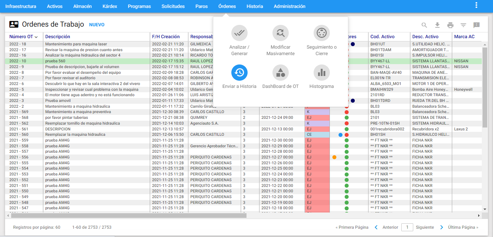 Imagen 149. Órdenes - Ir a Enviar a Historia
El objetivo de esta transacción es desplazar hacia el módulo de HM las OT que se hayan preseleccionado por subgrupo o de manera individual con Estado: Canceladas (K) o Cerradas (CE).
 Imagen 150. Órdenes - Visor Enviar a Historia
Imagen 150. Órdenes - Visor Enviar a Historia
En la gráfica anterior, Ventana de Seguimiento o Cierre, se aprecian sus componentes y sus respectivos contenidos.
En la ventana aparece un botón “Enviar a Historia” y tres casillas de selección. Estas casillas de selección parametrizan los registros que se desean enviar a Historia, estos son:
Todas las OT (cerradas y/o canceladas): Con esta opción se realiza el envío de todas las OT existentes en la base de datos, sin importar cualquier subgrupo activo. Todas las OT del visor (cerradas y/o canceladas): Esta opción se realiza el envío de todas las OT seleccionadas en el visor mediante un subgrupo.
La OT seleccionada: Esta opción realiza el envío de la OT que está resaltada en el visor (tiene la línea verde del cursor sobre sí).
Para enviar a Historia, se selecciona una de las opciones y se hace clic en el botón Enviar a Historia, entonces aparece la siguiente ventana y se da clic en ACEPTAR.
 Imagen 151. Órdenes - Enviar a Historia
Imagen 151. Órdenes - Enviar a Historia
Una vez que se acepte este proceso, las OT que hayan sido enviadas a Historia, no vuelven a ser OT activas, es decir, no pueden devolverse al módulo de OT. Una vez finaliza el proceso, aparece el siguiente mensaje:
 Imagen 152. Órdenes - Mensaje Envío OT a HM
Imagen 152. Órdenes - Mensaje Envío OT a HM
En caso de inexistencia de registros para ser enviados, aparece el siguiente mensaje:
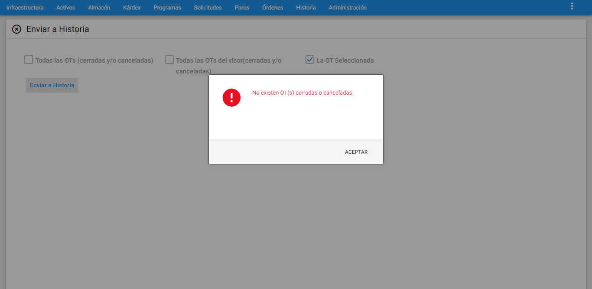 Imagen 153. Órdenes - Mensaje de Error Envío OT a HM
Dashboard de OT
A esta opción se llega sobreponiendo el cursor sobre el módulo de OT donde se despliega un submenú de transacciones disponibles y luego se da clic en “DashBoard de OT”.
 Imagen 154. Órdenes - Ir a Dashboard de OT
Imagen 154. Órdenes - Ir a Dashboard de OT
Este comando permite visualizar en tiempo real el comportamiento de los registros de OT con el fin de usarse como una herramienta para análisis y toma de decisiones rápidas.
 Imagen 155. Órdenes - Dashboard de OT
Imagen 155. Órdenes - Dashboard de OT
La información del rectángulo de color naranja ubicado en la parte superior derecha como guía a modo de fracción (N/M), indica el número de registros del subgrupo en el visor(N) sobre el número total de registros de OT existentes en la base de datos (M). Si no hay preselección, los dos números en sus totales son los mismos. También un indicador de la existencia de un subgrupo, es el ícono de triángulo invertido con una pelota de color rojo que se ubica al lado derecho de dicha fracción.
 Imagen 156. Órdenes - Subgrupos Dashboard
Imagen 156. Órdenes - Subgrupos Dashboard
Para personalizar la vista de los gráficos o tener una información específica se recomienda hacer subgrupos a través del ícono de triángulo invertido. Asimismo los DashBoards permiten ocultar información con solo dar un clic sobre sus rectángulos de colores como se muestra en la siguiente imagen:
 Imagen 157. Órdenes - Subgrupos Dashboard
Imagen 157. Órdenes - Subgrupos Dashboard
Sí se desea restablecer la información, se debe dar clic al ícono . En cambio, si se desea exportar el gráfico en un formato de imagen, es posible dando clic al ícono .